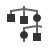
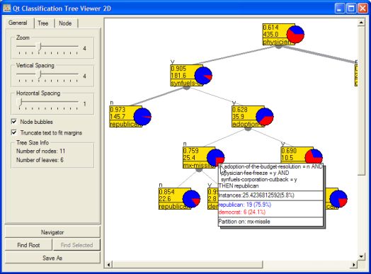
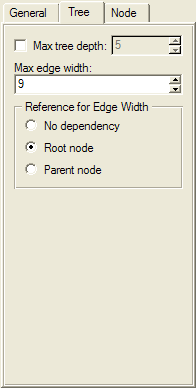
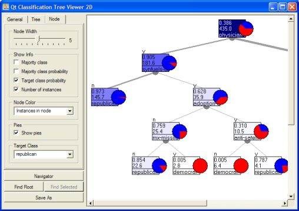
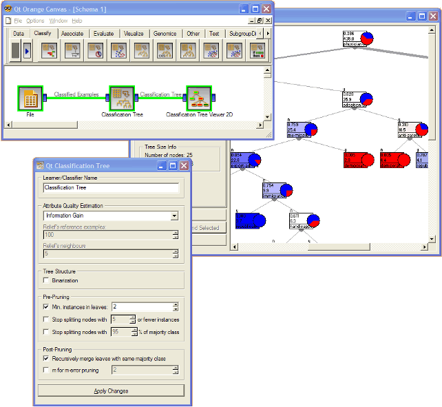
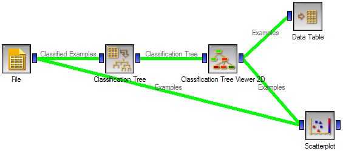

This is documentation for Orange 2.7. For the latest documentation, see Orange 3.
Classification Tree Graph¶
Visualization of classification tree.
Signals¶
- Inputs:
- Classification Tree (TreeClassifier)
Classification tree.
- Outputs:
- Examples (ExampleTable)
Attribute-valued data set associated with a classification tree node selected by the user.
Description¶
This is a versatile widget with 2-D visualization of classification tree that allows user to alter the appearance of the tree and associate tree-based data to graphical elements of the visualization. In addition, user can select a node, instructing the widget to commit the data associated to the node to its output channel, thus in combination with other widget obtaining interesting schemas for explorative data analysis.
General Tab¶
Several general parameters that affect the drawing size of the displayed tree may be set in the General tab. Here, user can set the zoom factor and define the vertical and horizontal spacing between the nodes. Node bubble information (like the one displayed in the snapshot above) may be turned off, and user may instruct the widget to truncate the text labels to fit provided space.
Tree Tab¶
In this tab the user can define the depth to which the widget will display the tree (may be useful when very large trees are induced). The edges between the nodes in the tree graph are drawn according to the maximum width defined in this tab. All the edges will be of equal width if No dependency is chosen in the Reference for Edge Width box. When Root node is selected instead, the width of the edge will correspond to the proportion of instances in the corresponding node with respect to all the instances in the training data set (that is, instances in the root node). That is, under this selection, the edge will get thinner and thinner when traversing toward the bottom of the tree. Selection of Parent node makes the edge width correspond to proportion of instances in the nodes with respect to the instances in their parent node.
Node Tab¶
Parameters from the Node Tab govern the appearance of tree nodes and define what is displayed in the node box, of which the size can be set manually (Node Width). Tree nodes can display two lines of information selected by the user (Show Info box). In the snapshot the probability for the target class (republican) was reported in the first line in the node, and number of instances from the training set that reached this node in the second text line. Because of treatment of missing values, these numbers may not necessary be integers.
The color of the node:
- may be uniform (Node Color set to Default),
- correspond to number of instances in the node with respect to the number of instances in the root node (Instances in node),
- may report on the probability of the majority class (Majority class probability) where one would expect that the color intensity would be higher towards the leaves of the node,
- may report on probability of the target class (Target class probability), with more intense colors marking the nodes where instances of target class are more frequent, and
- may report on the distribution of instances with target class, where the intensity of node color corresponds to proportion of the target class instances in the node with respect to the target class instances in the root node (Target class distribution).
Examples¶
Following is a simple schema where we have read the data, constructed the classification tree and viewed it in our tree viewer. Notice that if both the viewer and the widget that constructs the classification tree are open, any run of tree induction algorithm will have an immediate effect in the visualization. You can thus use this combination to explore how are the changes in induction algorithm reflected in the structure of the resulting tree.
Any click on the node of the tree would place the related data instances on the widget’s output channel. This is explored in the schema below that shows this data in the data table and as a data subset in the scatterplot visualizer (for scatterplot to display the selected data properly, make sure that the tree data is passed as a data subset; this can simply be done by connecting scatterplot to the Data widget first, and connecting it to the tree visualization widget next).
